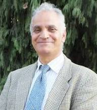

About NSSR & The Committee
Building a genuine, equitable research culture among Nepal's student community through mentorship and public academic engagement.
Nepalese Society of Student Researchers
The Nepalese Society of Student Researchers (NSSR) is a pioneering, student-led organization established to foster a rigorous, collaborative, and inclusive scientific culture across Nepal. By championing original inquiry, connecting emerging student scholars with distinguished national and international faculty advisors, and ensuring that high-level research training and presentation platforms remain accessible, NSSR bridges the gap between academic institutions and active field investigation.
Through fellowships, technical bootcamps, and cross-disciplinary seminars, NSSR empowers students across physics, chemistry, mathematics, computation, and social sciences to transition from theoretical learners to contributing members of the global scientific dialogue.
About the National Research Symposium
The National Research Symposium is the Society's flagship public event and the culminating activity of the NSRF fellowship cohort. Designed as a true festival of research, it brings together hundreds of student fellows, senior mentors, external researchers, policymakers, and members of the public in Kathmandu.
The symposium provides Nepal's next generation of researchers with a genuinely public stage to present original work through oral sessions, poster exhibitions, and plenary discussions under our core guiding focus: Moving from Isolated Studies to Shared Solutions.
Register as AttendeePublic Engagement & Keynotes
Opens with government and university representatives delivering keynotes on national science policy and funding frameworks.
Innovation Exhibition Stalls
Showcasing student prototypes, community partner solutions, and experimental models in an interactive summit format.
Research Mela & Fellows' Night
A vibrant evening closing celebration featuring soft music, open mic performances, food stalls, and guided night sky observation.
Local Organizing Committee

Prof. Dr. Rameshwar Adhikari
Leading the National Research Symposium Organizing Board